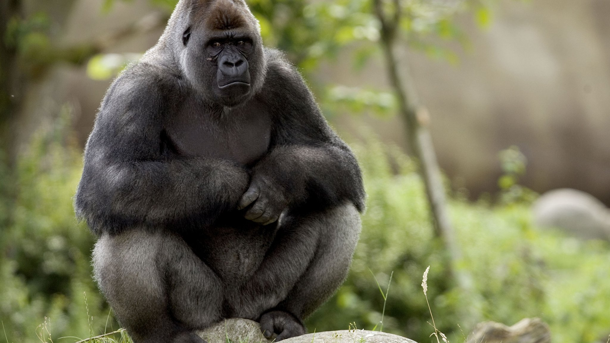

Diergaarde Blijdorp (Rotterdam Zoo) is officially called Stichting Koninklijke Rotterdamse Diergaarde. Rotterdam Zoo is 25 hectares in size, which is why we have different addresses. You can visit us 7 days a week via the main entrance at Blijdorplaan 8, 3041 JG Rotterdam.
Our registered address (no postal address!) is: Van Aerssenlaan 49, 3039 KE Rotterdam, the Netherlands. This is also our cityside entrance (no parking area here). Diergaardebijdorpssss

Onverwachts is dinsdag 4 april gorilla Bokito uit Diergaarde Blijdorp overleden. Sinds afgelopen zondag voelde hij zich niet lekker.
Maandag werd zijn ontlasting onderzocht en werd hij nauwkeuriger geobserveerd. Dinsdag was er nog steeds geen verbetering in zijn situatie.
Daarom werd besloten verder onderzoek te doen en vloeistoffen onder narcose toe te dienen. Hij overleed tijdens de narcose.
De oorzaak is nog niet bekend, er zal verder onderzoek worden gedaan. De gorillagroep is diep getroffen door deze gebeurtenis.
Er heerst ook een gevoel van shock onder het personeel, vooral bij de verzorgers.
Bokito werd geboren op 14 maart 1996 in de dierentuin van Berlijn. In 2005 kwam hij naar Diergaarde Blijdorp als onderdeel van het Europese fokprogramma.
In 2007 haalde Bokito wereldwijd het nieuws toen hij uit zijn verblijf ontsnapte.
Bokito kreeg tien nakomelingen en ontwikkelde zich in de loop der jaren tot een sociale familieman.
Hij accepteerde ook een pleegzoon, Nasibu, wat vrij ongebruikelijk is onder gorilla's. Hij bracht rust in de groep en creëerde een veilige omgeving voor alle gezinsleden.
baby olifant geboren
De pasgeboren olifant heette… Maxi! Geboren uit Faya en Fahim, werd Maxi vernoemd naar zijn grootvader Maximus. De kleine doet het heel goed.
Na een kort verblijf op de verloskamer kan baby Maxi nu elke dag naar buiten (als het weer het toelaat).
Stenen, takken, water: alles is nieuw en spannend voor Maxi, die onder het toeziend oog van zijn moeder en grootmoeder de wereld om hem heen verkent.
Zijn jonge oom Radijk wil ook met hem spelen!
Aqua
Start-up RoffaReefs, opgericht in Diergaarde Blijdorp, gaat haar drijvende kweeksysteem testen op Bonaire.
Dankzij een bijdrage uit het INNO-fonds van het Wereld Natuur Fonds konden we de werking van de unieke drijvende kraamkamers op het rif testen en verbeteren.
Momenteel wordt er getest in Diergaarde Blijdorp, maar ook in collega-aquaria in Nederland en Frankrijk.